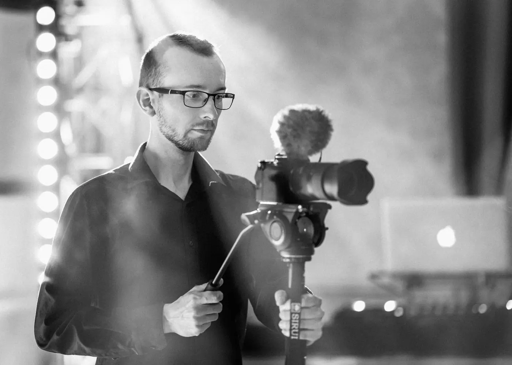

Silver Eye
5 500 zł *
Intensywnie i konkretnie. Wszystko, co najważniejsze tego dnia, w filmowej pigułce.
- jeden operator
- film 20-25 min + trailer 2 min
- od przygotowań do godz. 22
- link do filmu w chmurze
- miniplener w dniu ślubu

Kadr z teledysku: Weronika i Bartosz, Kmicic ZemborzyceKadr z teledysku: Mika i Piotr, Hotel Janów
Tworzymy filmy ślubne, w których nie ma miejsca na nudę. Emocje, detale i muzyka dobrana do Was.
Zapytaj o wolny termin
Okulary, które noszę od dziecka, są moją drugą parą oczu. Aparat, jego monitor i wizjer są piątym okiem, przez które patrzę podczas filmowania.
Ale piąte oko to coś więcej niż wzrok - to umiejętność obserwacji uczuć i emocji. Dzięki niej zwracam uwagę na szczegóły i staram się, żeby nie umknął mi żaden moment. Wiem, ile czasu i sił poświęciliście, by ten dzień wyglądał jak marzenie, dlatego zbieram wszystkie jego ulotne chwile.
Efekt? Film dynamiczny, pełen dobrych kadrów i dopasowanej muzyki. Montaż i jakość na miarę dzisiejszych czasów - zapomnijcie o telenoweli z lat 90.
Wojciech Chruścickiwłaściciel Studia Filmu PIĄTE OKO
Prawdziwe pary i miejsca z Lubelszczyzny. Kliknijcie kadr, a film uruchomi się od razu.
Każdy ślub to osobna historia i inni główni bohaterowie. Jesteśmy otwarci na Wasze pomysły co do reportażu.
Pracujemy na bezlusterkowych aparatach Sony z jasnymi obiektywami. O stabilizację obrazu i dobry dźwięk nie musicie się martwić - mamy odpowiedni sprzęt.
Nowoczesny, dynamiczny styl. Sceny, kadry i muzykę dobieramy ze smakiem, a obróbka kolorystyczna nadaje filmowi wyjątkowy, spójny wygląd.
Reportaż ze wszystkimi najważniejszymi momentami dnia, opowiedziany jak spójna historia o Was. Do tego trailer - dynamiczny albo romantyczny, wybieracie sami.
Im szerzej otwarta przysłona, tym więcej światła wpada do obiektywu. Im większy pakiet, tym więcej Waszego dnia zobaczycie na filmie.
5 500 zł *
Intensywnie i konkretnie. Wszystko, co najważniejsze tego dnia, w filmowej pigułce.
6 000 zł *
Nowoczesny reportaż, który pokazuje każdy szczegół i wiele emocji.
6 800 zł *
Duża dawka zabawy, detali i wzruszeń. Klasyka w nowoczesnym wydaniu.
* Ceny dotyczą terminów w 2026 i 2027 roku. Ślub w 2028? Napiszcie przez formularz - przygotujemy wycenę.
Pracujemy głównie w województwie lubelskim, ale bez problemu dojedziemy na drugi kraniec Polski.
Zadzwońcie albo napiszcie - odpowiemy i przedstawimy szczegóły naszej pracy.
+48 792 334 438Spotkanie w Lublinie? Żaden problem. Chętnie odpowiem na Wasze pytania i przy dobrej kawie opowiem, jak pracuję.
Podgląd koncepcji nowej strony - treści i kadry z obecnej strony piateoko.pl i kanału YouTube studia.